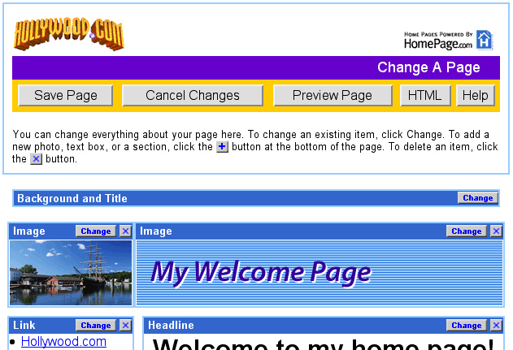

Front End Development
Homepages
2003
HomePages™ was a startup that provided end users with templates and an interface to make their own homepages online. It was a precursor to sites like Wix or Wordpress. As a Web Developer I was responsible for coding new templates, developing new features and product testing and quality control. At the time this site was very cutting edge and all of the technology was coded from scratch by the amazing team of Developers and Designers I worked with. I was personally responsible for users being able to add Flash to their pages and I contributed to adding a calendar and many other “widgets”. I coded many of the templates users were provided with.

Homepages™ was then marketed to corporate clients. I wrapped new graphics around our core product and coded custom templates specific to the client. Some of the more memorable ones were Petco Pet Pages. hollywood.com and Gurl Pages.
I often worked with the Design team to cut and optimize graphics. I made clickable prototypes for presenting to our corporate clients. Very fast paced, deadline oriented, environment.